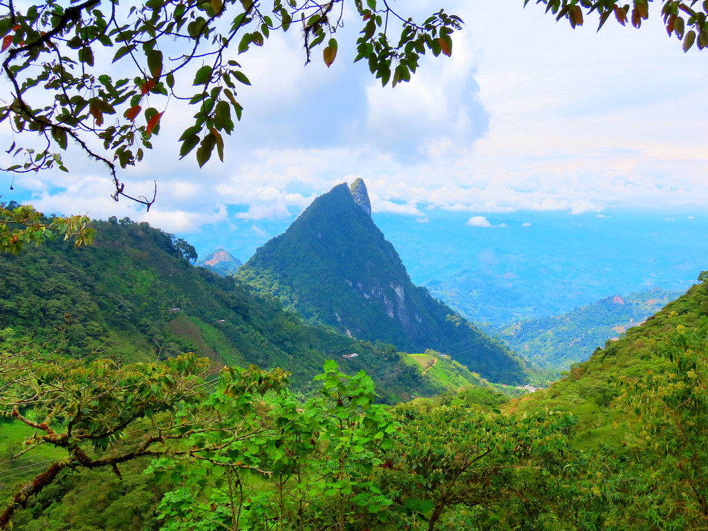
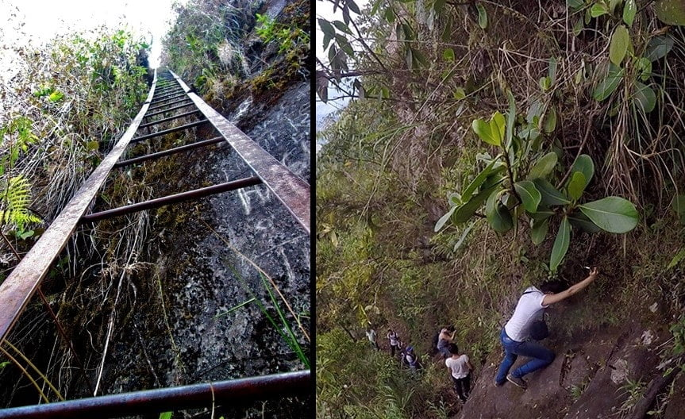
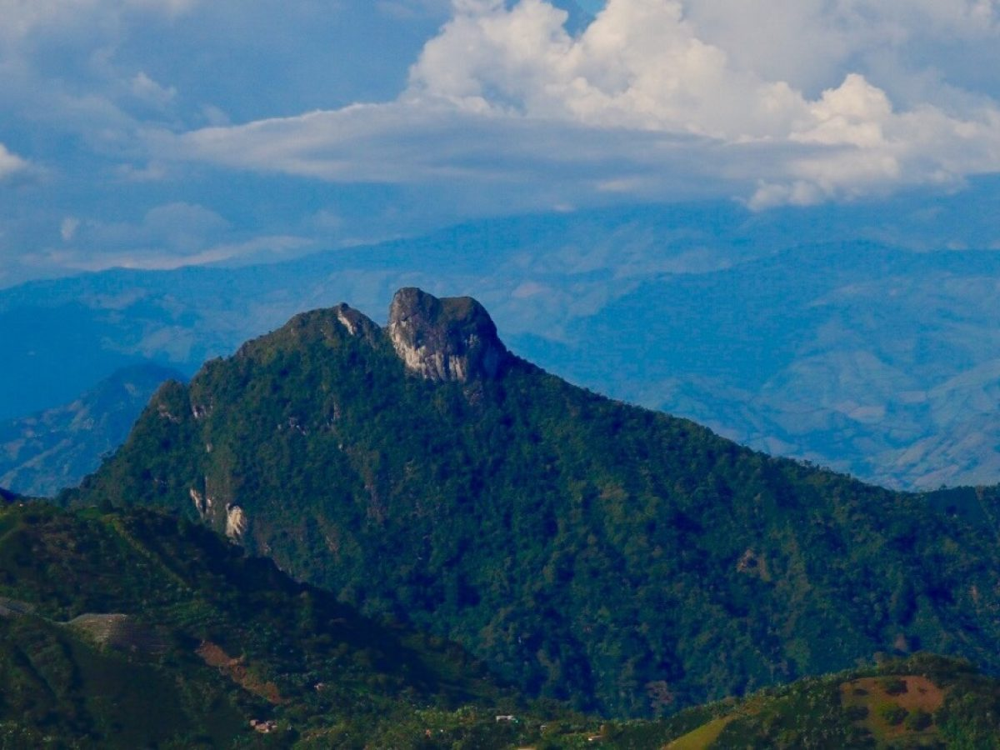
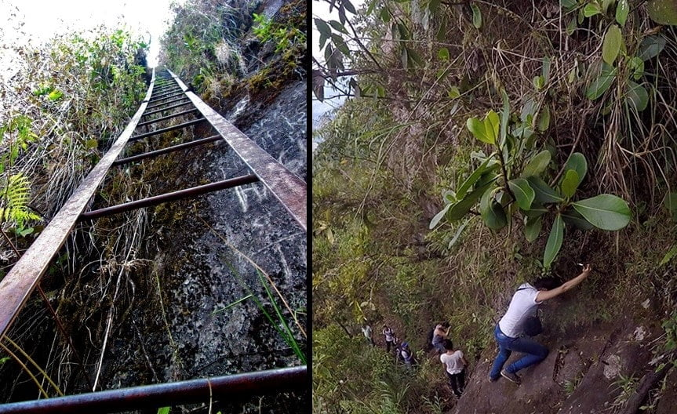
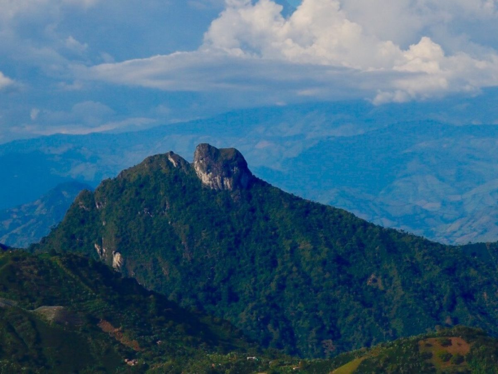
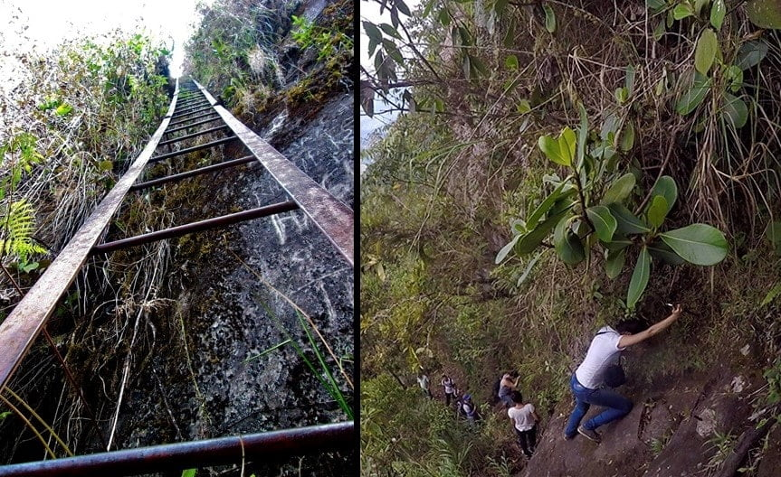
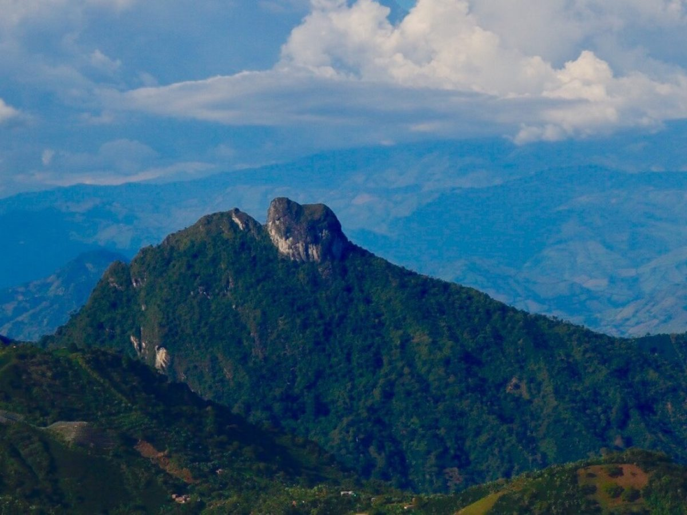

Cerro Batero
Quinchía, Risaralda

 





Descripción
El Cerro Batero es un importante punto geográfico y cultural en Quinchía, Risaralda. Ofrece impresionantes vistas panorámicas de la región y es un sitio ideal para el senderismo y la observación de aves. Su ubicación estratégica lo convierte en un lugar perfecto para la fotografía paisajística y actividades al aire libre.
Características
- 🏔️ Mirador natural
- 🦜 Avistamiento de aves
- 🚶♂️ Senderos de montaña
- 📸 Vistas panorámicas
- 🌄 Amaneceres y atardeceres
- 🌿 Flora nativa
- 🎭 Valor histórico
Horarios y Precios
Acceso:
24 horas
Días:
Todos los días
Nota:
Se recomienda guía local
Aviso Importante
No hay servicios de restaurante en el cerro. Se recomienda llevar agua y provisiones suficientes para la visita, o planear las comidas en el municipio de Quinchía.
Alojamientos en Quinchía
-
Hotel Central Quinchía
- Ubicación: Centro del municipio
- Habitaciones cómodas
- Servicios básicos
-
Finca Turística El Paraíso
- Entorno natural
- Ambiente tranquilo
- Cerca de Quinchía
-
Hostal Mirador de los Cerros
- Vistas panorámicas
- Ideal para fotografía
- Observación de aves
Recomendaciones
- 🎒 Llevar agua y alimentos
- 🧥 Ropa adecuada para clima variable
- 🥾 Calzado apropiado para senderismo
- 📱 Equipo de comunicación
- 🗺️ Contactar guía local